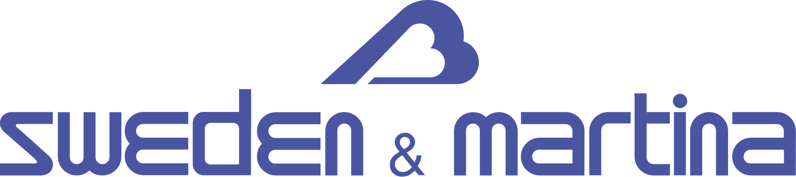

Jeste li znali da uz Dental Fiume možete ići kući istog dana s novim fiksnim zubima (implantatima)? Potencijalno za samo 6 sati ili manje!

Neposredno postavljanje implantata i privremena fiksna protetika u jednom posjetu.
Gubitak zuba značajno utječe na život osobe, utječući na izgled, funkcionalnost i samopouzdanje. Oštećava govor, žvakanje i gutanje te ometa društvene interakcije, što dovodi do smanjenog samopouzdanja i kvalitete života. Ovo protetsko rješenje nudi najviše standarde u zubnoj funkciji i estetici, pružajući brojne pogodnosti za poboljšanje života za pacijenta.
Prednosti All-on-4 i All-on-6 su:
- Najviši estetski standardi: pomoću 4 ili 6 implantata možemo ugraditi protetski most od 12 elemenata s vrhunskim cirkonskim i staklokeramičkim materijalima, osiguravajući najviše funkcionalne i estetske standarde.
- Promjena fizionomije lica: Gubitak zuba mijenja crte lica, uzrokujući stanjivanje usana i izbočenu bradu. Implantati i fiksno protetsko rješenje mogu preoblikovati lice, poboljšavajući zdravlje i estetiku.
- Funkcionalnost: Biokompatibilni implantat oponaša prirodni zub, vraćajući estetiku i funkciju metodom all-on-6. To pacijentu omogućuje normalno žvakanje, govor i smijeh.
- Dugotrajno rješenje: uz redovite preglede, pravilnu zubnu higijenu i zdrave životne navike, metoda all-on-4 i All-on-6 može biti cjeloživotno rješenje.
Kontaktirajte nas danas kako biste zakazali BESPLATNE konzultacije i saznali više o ovom transformativnom stomatološkom rješenju.
Zašto odabrati postupak implantacije u klinici Dental Fiume dr. Vladimir Kljajo?
- Isti dan Implantati
- Najkvalitetniji implantati iz Sweden & Martina, Bega i SGS (doživotno jamstvo uz redovite godišnje preglede)
- 99% uspjeha stopa na našim implantatima
- Međunarodno certificirano Implantolozi pod vodstvom dr. Vladimira Kljajja
- Mi smo dobro uspostavljena stomatološka klinika s Više od 20 godina tradicije i generacije zadovoljnih pacijenata
REZERVIRAJTE BESPLATNO savjetovanje